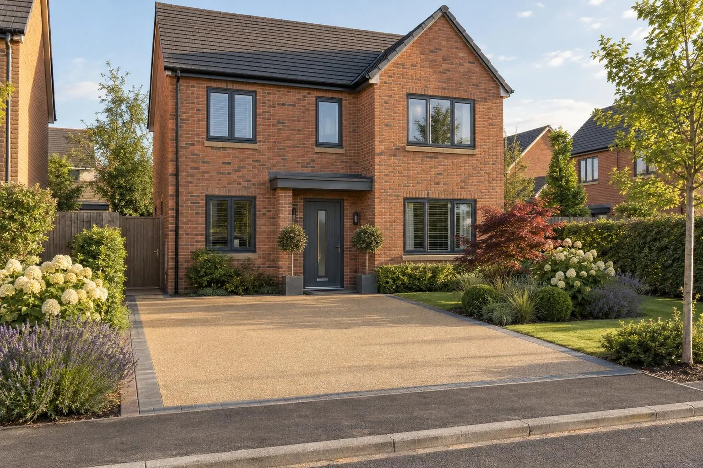
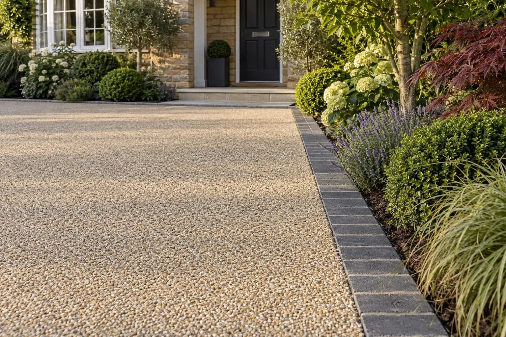
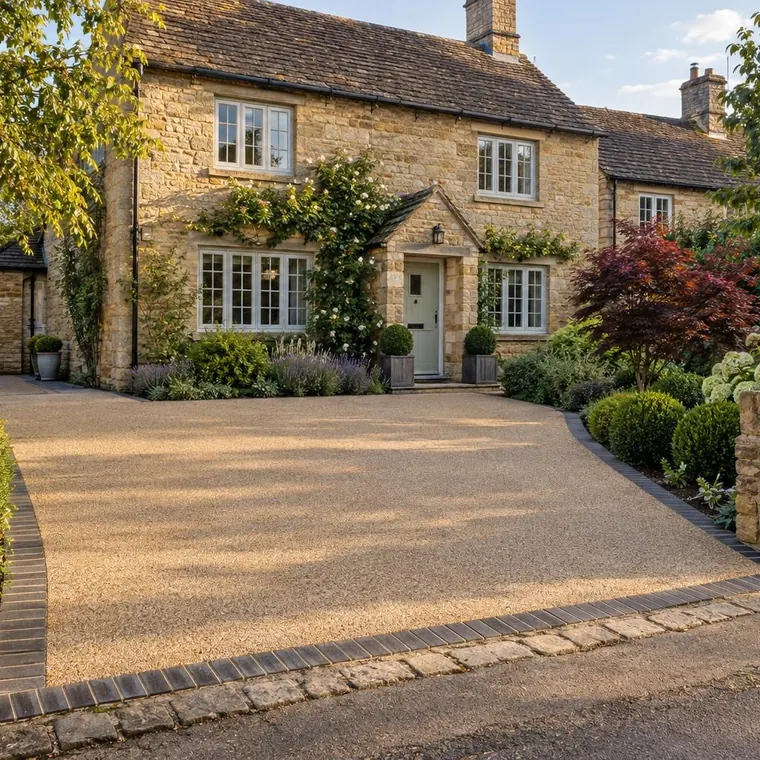
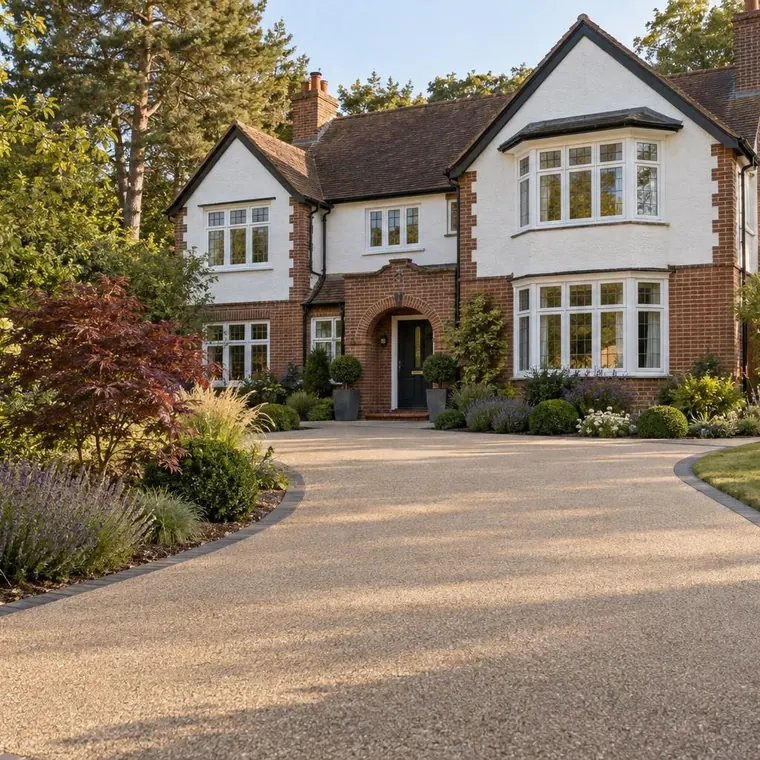
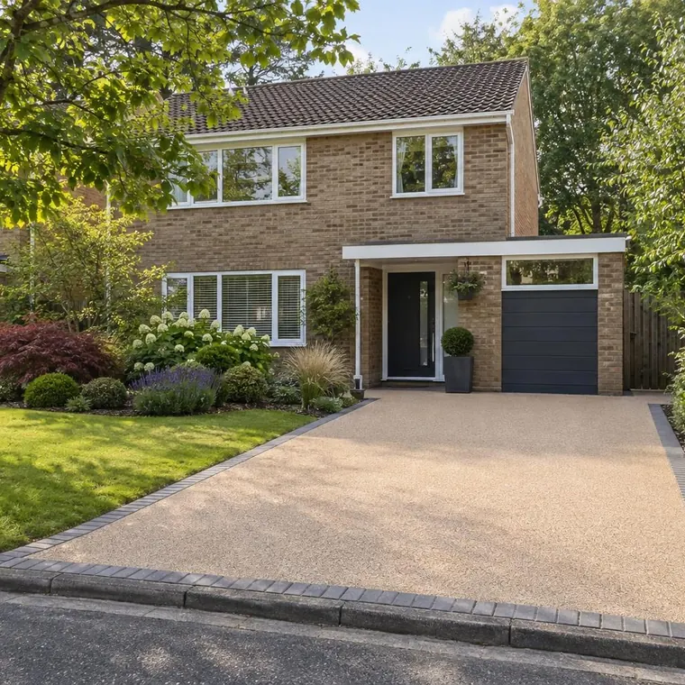
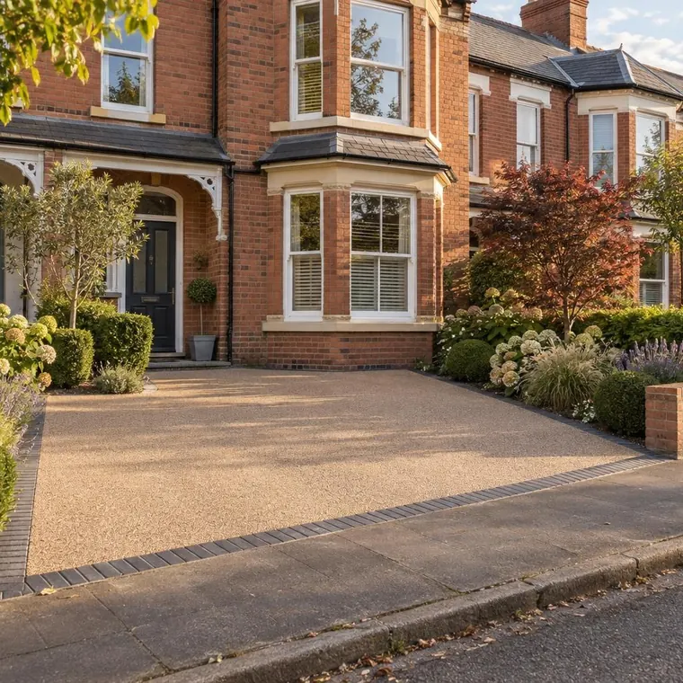

Resin bound driveways
Smooth, seamless and weed free, with no loose stone to walk into the house. The surface most people want the moment they see one in the flesh — so we will bring you the samples.
A resin bound driveway is kiln-dried stone mixed with clear UV-stable resin and trowelled onto a permeable base, giving a smooth, weed-free surface that water drains straight through. In Milton Keynes most cost £150–£220 per square metre all in and take four to six working days; we are a Vuba approved installer and lay them 18mm thick on Vuba's full base and surface system.
- Typical cost
- £150–£220 per m² — cost guide
- Typical time
- 4–6 working days
- Drive on it
- 24–48 hours after laying
- Guarantee
- 5 years in writing, plus Vuba’s product guarantee
Free design
We will design your driveway or garden and show you what it will look like, before you have spent a penny or committed to anything.
Samples at your door
We bring the actual blocks, slabs and aggregates to the house so you can see them against your brick, in your light, in the rain.
One price, held
The figure we give you is the figure you pay. No day-rate creep, no extras invented halfway through, nothing added at the end.
Stone and resin, mixed on site
Resin bound is kiln-dried aggregate mixed with a clear UV-stable resin in a forced-action mixer and trowelled out by hand while it is still workable. Every stone is coated, so the finished surface is porous all the way through — water goes down through it rather than running off it.
That is what separates it from resin bonded, which is loose stone scattered onto a coat of resin. Bonded is cheaper, it sheds stone for years and it is not permeable. If a quote is noticeably cheap, check which one you are being sold.
The material has a working life measured in minutes once it is mixed, so the whole job depends on having enough people, the right weather window and a base that is ready before the first kit is opened.
Everything below is included in a resin bound driveway
Smooth, seamless and completely weed free. No loose stone to walk into the house, nothing to rattle a pushchair, and it stays looking new for years with a wash down.
- A free design so you can see it before you commit
- A home visit with real samples, at a time that suits you
- Your old surface taken up and taken away
- Breaking out the old surface and base, priced in from the survey
- One price, agreed up front, with nothing added afterwards
- A tidy site every evening and no skip left on your road
- A five year guarantee, in writing, that transfers if you sell
- Vuba’s manufacturer guarantee on the resin system, as a Vuba approved installer
We are a Vuba approved installer and use Vuba's complete base and surface system rather than laying resin over someone else's tarmac. It removes the two week wait for oils to cure out of fresh tarmac, and it keeps Vuba's manufacturer guarantee intact.
Suits and does not suit
Resin bound is at its best on a drive that is reasonably flat, well drained and used by cars rather than heavy vehicles. It works beautifully against both new brick and old stone, which is why you see it on new-build plots and listed cottages alike.
- Excellent on gradients up to about 1:12 with the right blend
- Fully permeable, so generally no planning issue and no surface water into the road
- No loose stone, no weeds through joints, wheelchair and pushchair friendly
- Not the right choice for regular HGV or heavy plant loading
- Needs a dry weather window to lay, so winter work gets programmed carefully

Where resin drives go wrong
Too thin
14mm laid to save material. It looks identical on day one and starts breaking up at the edges within two winters. We lay 18mm.
Laid over green tarmac
Oils in fresh tarmac migrate up into the resin and stain it. Either wait a fortnight or use a base system that does not have the problem.
No edge restraint
Resin needs something to close against. A haunched edging or a block border, every time.
Wrong aggregate for the fall
Rounded stone on a slope will slump before it cures. The blend and the resin have to suit the gradient.
Poor drainage design
Permeable does not mean the water disappears. It still has to get somewhere, and on clay that needs designing.
Weather ignored
Laying in the wrong temperature or on a damp base causes blushing and slow cure. We will move a date rather than risk it.
The kind of finish we build




Planning and dropped kerbs by council
A front driveway needs no planning permission if it is permeable or drains to your own lawn or border; more than 5m² of impermeable surface draining to the road does (Planning Portal guidance). A new or wider entrance also needs a dropped kerb, and who builds it depends on your council.
| Council | Towns we cover | Dropped kerb fees | Who builds the crossing |
|---|---|---|---|
| Milton Keynes City Council | Milton Keynes, Bletchley, Wolverton, Stony Stratford, Newport Pagnell, Olney, Woburn Sands, Bow Brickhill, Hanslope | £237 to apply, plus a £537 licence package | an NRSWA-qualified contractor under council licence (we can do it) |
| Central Bedfordshire Council | Aspley Guise, Cranfield, Woburn, Leighton Buzzard, Ampthill | £156 assessment fee, then the council’s quote | the council itself |
| Buckinghamshire Council | Winslow | £520.38 licence | a private NRSWA-qualified contractor you appoint |
| West Northamptonshire Council | Towcester | £330 licence and inspection fee | a contractor from the council’s approved list |
Fees from each council’s website, checked October 2026. See dropped kerbs for the full process in each town.
Things people ask us
Is resin bound permeable enough to avoid planning permission?
How long does it take?
Can you drive on it straight away?
Does it go green or weedy?
What guarantee comes with it?
What does a resin drive cost?
Honest 2026 guide prices per square metre and for a typical two-car drive, with what moves the figure up or down.
Resin bound driveways near you
Local advice on ground, drainage, planning and prices for each town we cover.
- Resin bound driveways in Milton Keynes
- Resin bound driveways in Bletchley
- Resin bound driveways in Wolverton
- Resin bound driveways in Stony Stratford
- Resin bound driveways in Newport Pagnell
- Resin bound driveways in Woburn Sands
- Resin bound driveways in Bow Brickhill
- Resin bound driveways in Aspley Guise
- Resin bound driveways in Cranfield
- Resin bound driveways in Woburn
- Resin bound driveways in Hanslope
- Resin bound driveways in Olney
- Resin bound driveways in Leighton Buzzard
- Resin bound driveways in Winslow
- Resin bound driveways in Towcester
- Resin bound driveways in Ampthill
Want to see a resin drive up close?
We can usually point you at one nearby. It is a very different thing in person to a photograph on a website.